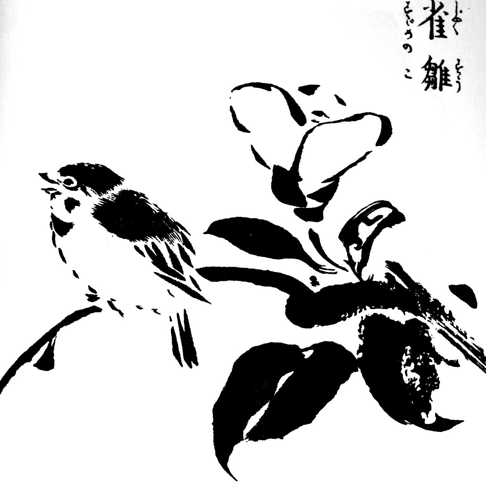
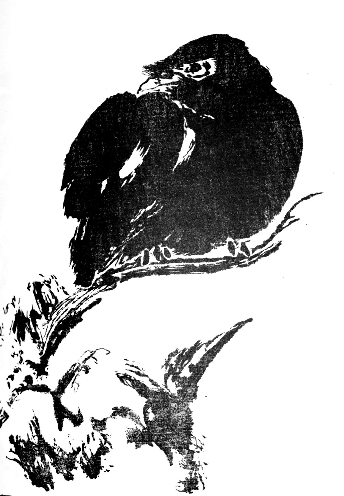

Presentation of Morikuni, heir of Kano school.
Presentation of Morikuni, a worshipper of nature.
To begin, a little japanese story :
One says that a painter entered in an inn for the night, after diner just before going to bed, he painted a cat. During the night a great noise is heard. At dawn, when the painter left, the innkeeper entered the room : the cat painted the day before had disappeared and two mices were lying dead on.

Great painters seem to have the power to capture the essence of the living on a sheet of paper.
In this article, we are going to learn how to capture nature essence with a japanese print master : Tachibana Morikuni.
Tachibana Morikuni (1679-1748) is a japanese painter, heir of Kano school founded by Kano Masubu (1434–1530). This japanese school produce different artworks such as fusuma (sliding screens), byobu (screens), emakimono (painted narrative scrolls). This school is known for the assimilation of traditional chinese painting, and to produce colorful illustrations often on a gold background. Morikuni dedicated his life to prints and contributed to the evolution of Kano school. His innovation he brought to Kano school and the improvement of the printing process, making it possible to better print the nuances of the ink. To do this, the wood used for printing was sanded to obtain a texture allowing the ink shades to be transferred.
Morikuni created his works on the fringes of the ukiyo-e movement supported by Hokusai and Hiroshige. He is a proponent of the grass style (sô) consisting in representing the essence of subjects, striving to remove unnecessary details and focusing on capturing its subtely. The difficulty of this technique reaches its peak when the painter uses only one stroke of the brush to achieve a complex shape, such as the plumage of a bird or a branch of a tree.
At that time of Morikuni, painting schools and workshops treasured reference drawings and paintings allowing the training of new painters and honoring orders of clients. Morikuni is known to have published a notebook contening all the secrets of the Kano school of which he was later expelled.
Here some works his work :
A young passerine

A crane

A crow under the snow
